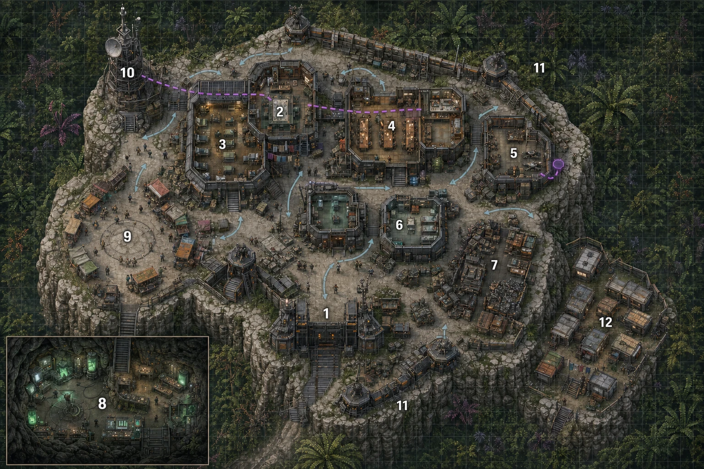
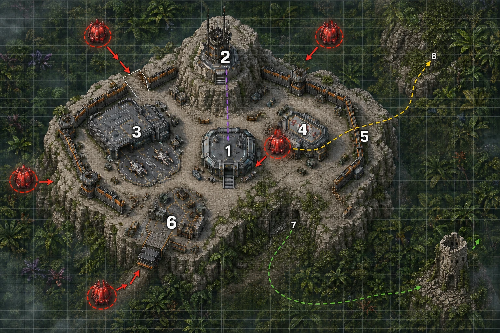

Mapas del Narrador — Puesto Fronterizo
Material exclusivo para el Narrador: contiene rutas, despliegues y accesos que los jugadores no deben ver.
Descargar hoja imprimible del Narrador — confidencial, no compartir con los jugadores.
El Puesto Fronterizo

| Nº | Zona |
|---|---|
| 1 | Acceso principal y control |
| 2 | Administración y dependencias de mando |
| 3 | Barracones y alojamiento |
| 4 | Comedor, cantina y espacios comunes |
| 5 | Taller de drones y equipo ligero |
| 6 | Enfermería y atención técnica |
| 7 | Taller pesado, recuperación y almacenes |
| 8 | Laboratorio de la Dra. Kess, excavado en la roca |
| 9 | Plaza del portal y mercado |
| 10 | Torre de comunicaciones |
| 11 | Torres y posiciones defensivas |
| 12 | Módulos de corporaciones visitantes y contratistas |
Esta distribución fija las funciones principales del Puesto. Las divisiones interiores, dependencias menores y ocupación concreta pueden adaptarse a las necesidades de la campaña.
Código de líneas (mismo código en los dos mapas de esta ayuda):
- Violeta: vigilancia, transmisión o rastro técnico clandestino.
- Amarillo: ruta secreta individual.
- Verde: túnel, evacuación o salida alternativa.
- Rojo: desembarco y avance enemigo.
- Azul claro: circulación o patrulla ordinaria.
Los números identifican zonas, no distancias exactas. Las líneas representan información operativa y no forman parte física del terreno.
Punta de Lanza B

Esquema oficial de ocho zonas (ver Localización — esquema de ocho zonas, Acto IV):
| Nº | Zona | Notas |
|---|---|---|
| 1 | Módulo de mando | Coordinación, comunicaciones internas, mapa de situación |
| 2 | Torre de comunicaciones | Incluye las antenas ya intervenidas por Capricornio |
| 3 | Taller y hangar de drones | Base de operaciones de Shepard |
| 4 | Enfermería y refugio | Capacidad limitada — primer punto de colapso si el asedio se alarga |
| 5 | Perímetro principal | Línea de defensa visible, primera en recibir el desembarco |
| 6 | Plataforma de suministros | Munición y repuestos, lo que quede de las cuotas de Varice |
| 7 | Conducto o túnel antiguo | Secreto. Unos dos kilómetros hasta una torre semiderruida con restos de una presencia anterior de Serpent — ordenadores incompletos, información parcial. No resuelve la investigación por sí solo. |
| 8 | Cápsula oculta de Corliss | Secreto. Fuera del perímetro. |
Despliegue de las cinco vainas de Serpent (Fase 2 — Desembarco), disposición por defecto:
- 2 vainas sobre el Perímetro principal (zona 5) — la amenaza más directa.
- 1 vaina cerca de la Plataforma de suministros (zona 6) — busca cortar recursos.
- 1 vaina cerca del Conducto o túnel (zona 7), si Serpent conoce su existencia.
- 1 vaina en reserva, que se reposiciona según evolucione el combate, normalmente hacia donde detecte a Pitt o a Corliss.
Código de líneas (mismo código que en el mapa del Puesto):
- Violeta: vigilancia, transmisión o rastro técnico clandestino.
- Amarillo: ruta secreta individual — la cápsula oculta de Corliss (zona 8).
- Verde: túnel, evacuación o salida alternativa — el conducto antiguo (zona 7) y su recorrido de unos dos kilómetros hasta la torre semiderruida.
- Rojo: desembarco y avance enemigo.
- Azul claro: circulación o patrulla ordinaria.
Relación con las fases del asedio: la interferencia de la Fase 1 impide ver este despliegue hasta que las vainas entran en rango visual — ese es el disparador de la Fase 2, que es exactamente la disposición que muestra este mapa. Ver Fases del asedio, Acto IV, para el resto de la secuencia.